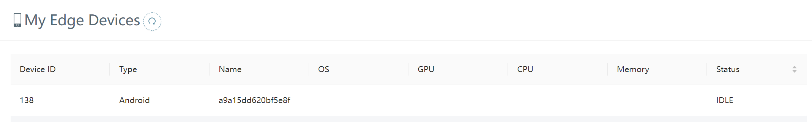
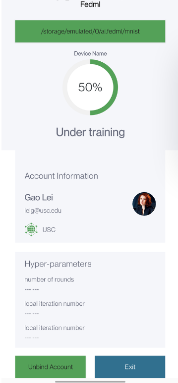

Federated Learning on Android Smartphones¶
This example will guide you to work through how to run federated learning on Android smartphones. The code for this example locates in the following two paths:
Python Server: python/examples/cross_device/mqtt_s3_fedavg_mnist_lr_example
Android Client: mobile/android
For the source code of Android Client, we will release it soon. Currently, we show you the step-by-step user experiment of using FedML Beehive.
1. Install Synthetic Data on Android Devices¶
1.1 Install the adb command tool on your laptop¶
If you haven’t installed adb, please refer to the installation steps at https://www.xda-developers.com/install-adb-windows-macos-linux/
Then you should turn on the developer mode and USB debugging options for your Android device. The specific operation of each brand of device is not consistent; you can find and refer to the relevant instructions.
Next please connect the Android device to your laptop, and run the following command to see your device serial number.
adb devices
If it works correctly, it means you have successfully connected your laptop to your mobile device using adb.
1.2 Transferring data to mobile devices¶
You can download the required data and transfer it to the specified directory of the device with the following command:
bash prepare.sh
prepare.sh is as follows:
MNIST_DIR=mnist
CIFAR10_DIR=cifar10
ANDROID_DIR=/sdcard/ai.fedml
rm -rf $MNIST_DIR
mkdir $MNIST_DIR
wget http://yann.lecun.com/exdb/mnist/train-images-idx3-ubyte.gz -P $MNIST_DIR
wget http://yann.lecun.com/exdb/mnist/train-labels-idx1-ubyte.gz -P $MNIST_DIR
rm -rf $CIFAR10_DIR
rm -rf cifar-10-binary.tar.gz
wget wget https://www.cs.toronto.edu/~kriz/cifar-10-binary.tar.gz
tar -xzvf cifar-10-binary.tar.gz
mv cifar-10-batches-bin $CIFAR10_DIR
adb push $MNIST_DIR $ANDROID_DIR
adb push $CIFAR10_DIR $ANDROID_DIR
The MNIST dataset folder and the CIFAR-10 dataset folder can be moved to /sdcard/ai by running the above script.
2. Install Android Apk, bind your Android smartphone devices to FedML MLOps Platform, and set the data path¶
After Android Application (APK) is installed, please go to the MLOps platform (open.fedml.ai) and switch to the Edge Devices page, you can see a list of My Edge Devices at the bottom, as well as a QR code and Account ID:XXX at the top right.
You can also see the binding devices in the My Edge Devices list on the web page.
To set datapath on your device, click the top green bar. Set it as the path to the corresponding dataset moved to the Android device.
3. Start FL Server¶
start the python server at FedML-refactor/python/examples/cross_device/mqtt_s3_fedavg_mnist_lr_example . Remember to start your application before start the server.
bash run_server.sh
You will see the output in the server console similar to the following, with each round outputting the current test accuracy and loss:
FedML-Server(0) @device-id-0 - Thu, 28 Apr 2022 02:48:53 mlops_metrics.py[line:88] INFO report_aggregated_model_info. message_json = {'run_id': '189', 'round_idx': 2, 'global_aggregated_model_s3_address': None}
FedML-Server(0) @device-id-0 - Thu, 28 Apr 2022 02:49:22 mqtt_s3_comm_manager.py[line:164] INFO --------------------------
...
[2022-04-28 02:49:31,128] [INFO] [fedml_aggregator.py:76:aggregate] training_num = 300
[2022-04-28 02:49:31,128] [INFO] [fedml_aggregator.py:77:aggregate] len of self.model_dict[idx] = 1
[2022-04-28 02:49:31,129] [INFO] [fedml_aggregator.py:91:aggregate] aggregate time cost: 0
[2022-04-28 02:49:32,711] [INFO] [fedml_aggregator.py:200:test_on_server_for_all_clients] test acc = 83.27
[2022-04-28 02:49:32,711] [INFO] [fedml_aggregator.py:201:test_on_server_for_all_clients] test loss = 0.5836178064346313
...